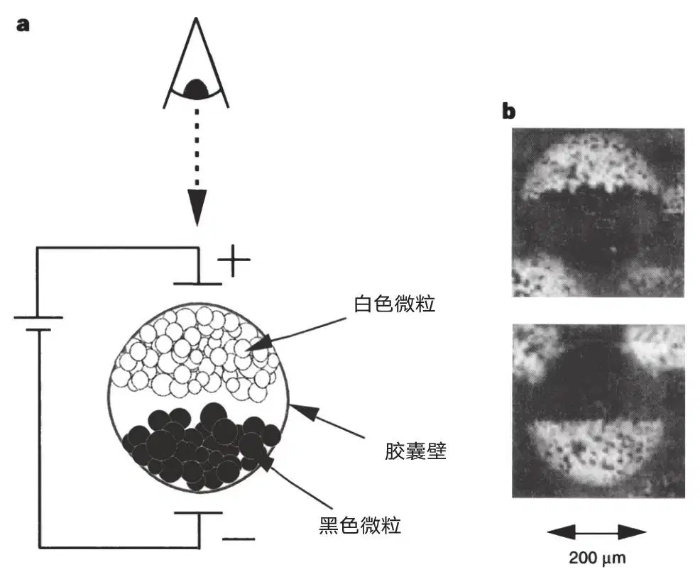
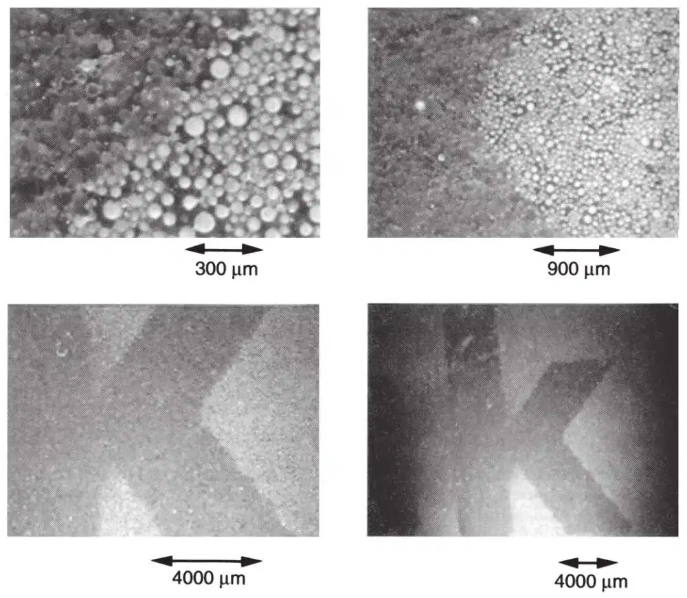
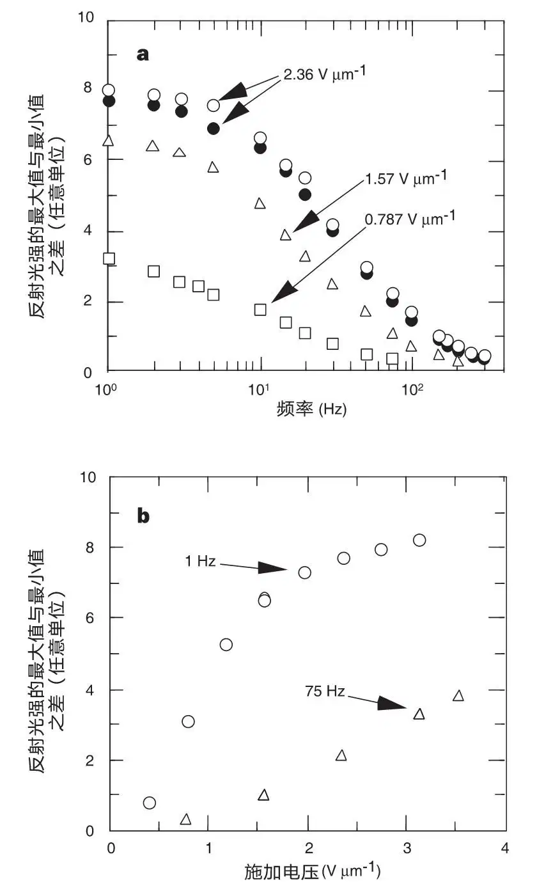

英文
英文科米斯基等
编者按
与电子显示相比，印刷的文字仍然具有一定的优势。电子显示器的轻微闪烁容易使眼睛疲劳，另外，它们易碎、昂贵、耗能，在明亮的环境光线下对比度下降。因而刺激了能够兼顾纸质印刷物的优点和电子信息系统的便利性与广泛性的“电子纸张”的需求。麻省理工学院媒体实验室的研究人员在本文中报道了首选材料之一：置于软塑料片上的透明微胶囊层。每个胶囊中都含有在电场中可移向顶面的黑、白两种颜色的微粒。这篇基础性的文章导致一个派生公司——E-Ink的问世，该公司与微电子公司合作后，一系列便携式显示设备已进入市场。 英文
长期以来，显示媒介领域的研究人员一直有一种追求，即发明一种柔韧的低成本系统，也就是实现纸张的电子模拟。在这种情况下，基于微粒的显示器[1-5]早已引起了研究人员们的兴趣。这类显示器中可切换的对比度是通过强散射或强吸收微粒（尺寸范围为0.1~5 μm）的电迁移来实现的，完全不同于人们熟知的通过分子的性质来调控的液晶显示器[6]。基于微粒的显示器拥有本征双稳态，表现出极低的直流电场编址，并且具有很高的对比度和反射率。这些特征，再加之近朗伯显示特性，就能产生“纸上墨迹”的视觉效果[7]。但是这类显示器却存在着寿命短，制作难度大的缺点。本文中我们报道了一种基于电泳分散微胶囊化[8]的电泳型墨水的合成。使用微胶囊化的电泳介质解决了寿命问题，并且实现了仅用印刷技术便可制造双稳态电子显示器的要求。该系统可以达到电子纸张应用于实际的要求。 英文
以往生产基于微粒的显示器的方法是以在玻璃腔[1]或弹性板[2,3]中的双色拧转球，和它们在玻璃腔中的电泳[4,5]为基础的。与液晶显示器相比，微粒显示器具有优越的光学和电学特性，基于高散射颜料例如二氧化钛（n=2.7）的静电迁移能力，使其和周围介电液体及高吸收和遮盖力黑色颜料之间的光学折射率差异较大（∆n=1.3）。从而导致散射长度很短（约1 μm）而相应的反射率和对比度很高，效果和纸上墨迹相近。相比较而言散射型液晶的典型折射率差值则小于∆n=0.25（参考文献9）。 英文
尽管具有这些有利的属性，现阶段的微粒显示器仍然存在许多缺点。其中包括，在双色拧转球系统中，由于在接近直角时偶极力下降，使其难以完全拧转（从而达到最大反差），此外还有制造上的困难。至于电泳系统，缺点包括胶体不稳定性[10]引起的寿命缩短。总之，至今为止，各种类型的双稳态显示媒体都不可能通过如印刷这样的简单过程来生产。（尽管用喷墨法在掺杂的电致发光聚合物薄膜上制备有机发光结构最近已有进展[11]，但这类发光非双稳态显示器并没有达到“电子纸张”的关键指标，即零能耗时信息的持久显示。） 英文
为了实现可印刷的双稳态显示系统，我们合成了一种电泳墨水，通过将电泳分散的液滴微胶囊化，微胶囊的直径范围为30~300 μm。图1a显示了不同颜色的带电微粒微胶囊化系统的操作示意图，在该系统中一种或另一种粒子可以通过外加电场移向观察者。图1b显示了用正负电场编址的单一微胶囊的横截面显微照片。 英文

图1．电泳微胶囊。a，电泳成像显示器微胶囊化的示意图（黑白微粒系统）。上方的透明电极带正电，引起带负电的白色微粒向它迁移。带相反电荷的黑色微粒向下方电极迁移。b，用正负电场编址单个微胶囊的显微照片。 英文
微胶囊电泳系统经由以下工序合成。微胶囊的分散相由黑白微粒在介电流体的分散系混合而成。白色微粒是通过金红石型二氧化钛（比重=4.2）在熔化的低分子量聚乙烯的悬浮液中雾化而成。黑色微粒可用无机黑色颜料经过类似的过程制备。所得粒子经筛分得到平均直径为5 μm的干粉。此外直径小于1 μm的较小单分散粒子可用化学方法制备。聚乙烯用来降低粒子的比重（通常降至1.5左右）和提供经化学修饰的表面使之能够带电。悬浮液中粒子表面电荷来自双电层作用[12]。黑色颜料的导电性使黑白粒子具有不同的界面电位（进而有不同的迁移率）[13]。这些微粒被分散于四氯乙烯（比重1.6）和一种脂肪烃（比重0.8）的混合物中，混合物与所制备粒子的比重相匹配。在粒子按设计分别带有异性电荷的情况下，在粒子表面上通过物理吸附覆盖上一层高聚物，使得粒子间存在强互斥力[10]以避免发生聚沉。此外，还制备了分散在染色（油蓝N）介电流体中的单粒子系统（白色微粒）。 英文
该悬浮液置于典型电泳显示器的两块玻璃电极之间，在水相中乳化并通过尿素和甲醛的原位缩聚反应实现微胶囊化。该方法可制得高强度、光学性能清晰、分立的微胶囊。筛选后可获得所需尺寸范围的微胶囊，随之进行清洗和干燥。 英文
在载体（紫外光固化的聚氨酯）中制备和分散微胶囊（染料中的白色粒子）后，随即覆以透明导电薄膜（载有氧化铟锡（ITO）的聚酯）。然后，用于显示层的背电极由银掺杂的聚合物墨水印制而成。图2显示了不同放大率下的一系列显微照片，为字母“k”在电子墨水中的电子编址。所示样品曾经过筛选，胶囊平均尺寸为40±10 μm，得到的胶囊分辨率为每英寸约600点。通过运用结构化的面电极（或者编址线与连续电极方向相反）系统，我们可对部分单一微胶囊编址，得到的编址分辨率为每英寸约1,200点。 英文

图2．电泳墨水。胶囊直径为40±10 μm，厚度为200 μm的电子墨水（“染料中白色粒子”型）薄膜显微照片（俯视图）。电子编址的字母“k”为白色，其他区域为蓝色。 英文
除了制作灵活的可印刷系统之外，微胶囊电泳分散法解决了电泳显示器的一个存在已久的问题，即由于粒子簇集，聚沉，以及横向迁移带来的寿命受限问题[10]。因为分散被物理地限制在分立的空间中，移动和聚集都不可能超出胶囊的尺寸。目前为止，我们制备的墨水样品，经107次以上的切换循环，没有观测到性能有所下降。测量得到的对比度为7∶1，反射率为35%，并且观测到近朗伯显示特性。运用相同的测量系统，我们测得报纸的对比度为5∶1，反射率为55%。而且经几个月的存放后，该材料仍然可以很容易地编址。 英文
图3a中展示了反射光强的最大和最小值之差（对比度未归一化）与不同外加场下驱动频率的关系；空心图形代表频率由低至高时采集的数据，实心图形代表频率由高至低时所采集的数据。图3b为不同频率下对比度与外加电场的关系。图3中的数据源于200 μm的电子墨水（“染料中白色粒子”型）薄膜，在具有银墨水背电极的ITO聚酯膜上的胶囊直径为40±10 μm。 英文

图3．胶囊直径为40±10 μm，厚度为200 μm的电子墨水（“染料中白色粒子”型）薄膜的属性。a，反射光强的最大值与最小值之差（对比度）与不同外场下驱动频率的关系（空心图形，频率由低至高采集的数据；实心图形，频率由高至低所采集的数据）。b，不同频率下对比度与外场的关系。 英文
我们可以通过如下方法计算粒子的迁移率、界面电位和单位粒子的荷电量。图3a中低频渐近线意味着当驱动频率足够低时，内部粒子有时间完全横穿胶囊，之后对对比度没有进一步的贡献。因此图3a中S形的突起点可以视为粒子刚好在胶囊中以5 Hz的频率往返一周（2×40 μm=80 μm）时的速率，为v=400 μm·s－1。雷诺常数由Re= vrη－1给出，其中为内部流体密度，r为粒子半径，η为内部流体黏度，v为粒子速度。对于现在的系统，有=1.6×10－15 kg·μm－3，v=400 μm· s－1，r=0.5 μm，η=0.8×10－9 kg·μm－1·s－1，Re=0.0004 ≪ 1，并且流动为层流[14]。确定层流的瞬态时间可以从纳维–斯托克斯方程中估算出来，为τss=(1 / 9) r2η－1=55 ns。因此在我们所感兴趣的时间尺度之内，粒子迁移率可以表示为μ=v / E=ϵζ / 6πη=q / 12πrη，其中ϵ为内部流体的介电常数，ζ为粒子的界面电位，q为单位粒子的电量。对于我们的系统，μ=169 μm2·V－1·s－1，ϵ=2.5×8.85×10－6 kg·μm·s－2·V－2，ζ=120 mV，q=2.6×10－18 C=16e－。单位粒子带电量极低表示遵守“去场”双稳态机制。粒子/胶囊壁和粒子/粒子间的结合对来自带电量很小的微粒间的粒子/粒子互斥起主导作用。“去场”双稳态的其他机制包括电荷再分布以及最小化。 英文
vrη－1给出，其中为内部流体密度，r为粒子半径，η为内部流体黏度，v为粒子速度。对于现在的系统，有=1.6×10－15 kg·μm－3，v=400 μm· s－1，r=0.5 μm，η=0.8×10－9 kg·μm－1·s－1，Re=0.0004 ≪ 1，并且流动为层流[14]。确定层流的瞬态时间可以从纳维–斯托克斯方程中估算出来，为τss=(1 / 9) r2η－1=55 ns。因此在我们所感兴趣的时间尺度之内，粒子迁移率可以表示为μ=v / E=ϵζ / 6πη=q / 12πrη，其中ϵ为内部流体的介电常数，ζ为粒子的界面电位，q为单位粒子的电量。对于我们的系统，μ=169 μm2·V－1·s－1，ϵ=2.5×8.85×10－6 kg·μm·s－2·V－2，ζ=120 mV，q=2.6×10－18 C=16e－。单位粒子带电量极低表示遵守“去场”双稳态机制。粒子/胶囊壁和粒子/粒子间的结合对来自带电量很小的微粒间的粒子/粒子互斥起主导作用。“去场”双稳态的其他机制包括电荷再分布以及最小化。 英文
图3a指示出切换速度与对比度之间的制约关系；图3b显示了外场与对比度之间的制约关系。在两组曲线中，高对比度渐近线暗示着粒子完全穿越胶囊的机制，随后时间和外场都不再起作用。和“染料中的单粒子系统”不同的是，在双粒子（黑/白粒子）系统中，由于白粒子处于染料之中，而染料对光不发生指数型吸收，因而削弱了这种制约。 英文
大量像素的有效编址要应用矩阵编址。矩阵编址又依次要求对比材料（被动矩阵）或者基本电层（主动矩阵）具有一个阈值以防止编址线之间的串扰。通常，显示材料可以支持少量像素的被动矩阵编址[15]。大量像素要求电子元件在实现主动矩阵编址时具有非线性[16]。主动矩阵结构，通常是由在玻璃上的多晶硅形成，昂贵而且不具备低成本的柔韧性类纸张显示器的许多优点。我们的团队近期提出了一种可印刷的金属–绝缘体–金属（MIM）的二极管结构[17]，可以组成电泳墨水的主动矩阵，应当有可能使驱动电泳墨水的高像素数印刷板成为现实，因为使用了这种墨水材料，保持了制造的简单易行和结构的低成本。其他团队的工作也可能应用到这项研究之中[18]。我们相信这种系统会开创可印刷微观机电系统的一个新研究领域。结合现阶段其他可印刷技术的思路，这种技术预期将从根本上改变印刷的特性，从印刷形式到印刷功能。 英文
（崔宁 翻译；宋心琦 审稿）